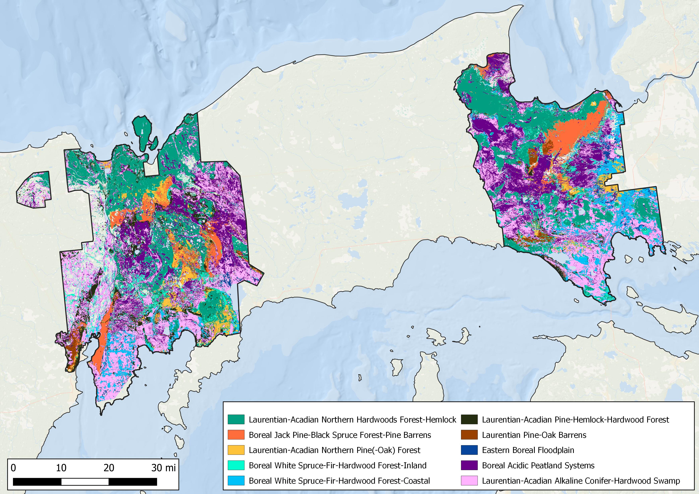
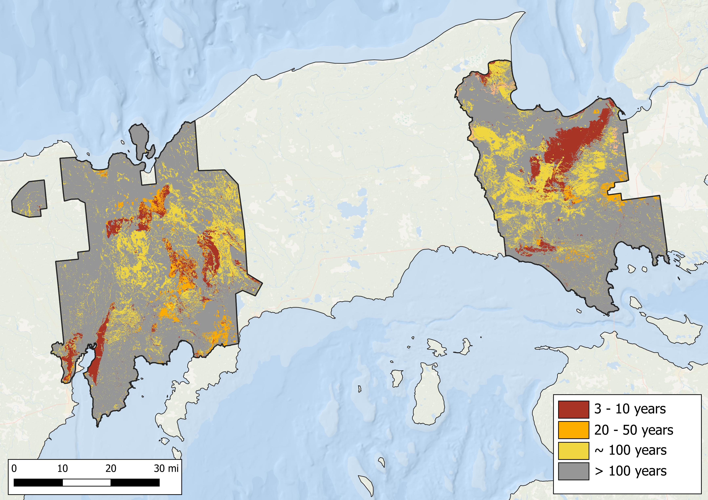

Past
LANDFIRE’s Biophysical Settings (BpSs, aka “Historical Ecosystems”) represent “the vegetation system that may have been dominant on the landscape prior to Euro-American settlement and is based on both the current biophysical environment and an approximation of the historical disturbance regime.” (from https://landfire.gov/bps.php). We will use this data to explore the most prevalent BpSs in a chart and map, and also the historical disturbance data that are linked to the BpSs.
Summary
Historically 10 historical ecosystems covered roughly 90% of the Hiawatha National Forest. More specifically:
- Wetland types (primarily the ‘Laurentian-Acadian Alkaline Conifer-Hardwood Swamp’ and ‘Boreal Acidic Peatland Systems’) were present on > 40% of the area.
- The ‘Laurentian-Acadian Northern Hardwoods Forest-Hemlock’ ecosystem covered ~20% of the area
- Roughly 30% of the Hiawatha had ecosytems with Mean Fire Return Intervals (MFRI) of ~100 years or less, with ~10% having a MFRI of > 10 years.
Chart of most prevalent Biophysical Settings
Map of most prevalent Biophysical Settings

Chart of historic annual acres burned per ecosystem

Simplified map of historical fire regimes

Data table
| ZONE | BPS_MODEL | BPS_NAME | GROUPVEG | FRI_REPLAC | FRI_MIXED | FRI_SURFAC | FRG_NEW | ACRES | REL_PERCENT |
|---|---|---|---|---|---|---|---|---|---|
| 51 | 14810_41_50_51_63 | Laurentian-Acadian Alkaline Conifer-Hardwood Swamp | Riparian | 989 | NA | NA | V-B | 430,879 | 24.0 |
| 51 | 13022_41_50_51 | Laurentian-Acadian Northern Hardwoods Forest-Hemlock | Hardwood | 2,040 | NA | NA | V-B | 379,395 | 21.1 |
| 51 | 14770_40_41_50_51 | Boreal Acidic Peatland Systems | Riparian | 716 | NA | 123 | III-B | 311,551 | 17.4 |
| 51 | 13441_51 | Boreal Jack Pine-Black Spruce Forest-Pine Barrens | Conifer | 34 | 64 | 7 | I-A | 110,054 | 6.1 |
| 51 | 13652_51 | Boreal White Spruce-Fir-Hardwood Forest-Coastal | Conifer | 872 | 1,306 | NA | V-B | 109,018 | 6.1 |
| 51 | 13651_51 | Boreal White Spruce-Fir-Hardwood Forest-Inland | Conifer | 490 | 524 | NA | V-A | 95,366 | 5.3 |
| 51 | 13660_51_63_64_65_66 | Laurentian-Acadian Pine-Hemlock-Hardwood Forest | Hardwood-Conifer | 482 | 998 | 289 | III-B | 95,515 | 5.3 |
| 51 | 13022_41_50_51 | Laurentian-Acadian Northern Hardwoods Forest-Hemlock | Hardwood | 2,040 | NA | NA | V-B | 92,585 | 5.2 |
| 51 | 13620_51_63_64_65_66 | Laurentian-Acadian Northern Pine(-Oak) Forest | Hardwood-Conifer | 309 | 447 | 65 | III-A | 61,375 | 3.4 |
| NA | NA | Open Water | Open Water | NA | NA | NA | NA | 36,104 | 2.0 |
| 51 | 14071_41_50_51 | Laurentian Pine-Oak Barrens | Hardwood-Conifer | 109 | 75 | 5 | I-A | 22,250 | 1.2 |
| 51 | 14440_41_50_51 | Eastern Boreal Floodplain | Hardwood | NA | 581 | 312 | V-A | 16,055 | 0.9 |
| 51 | 13442_51 | Boreal Jack Pine-Black Spruce Forest-Spruce-Fir | Conifer | 112 | NA | NA | IV-B | 11,395 | 0.6 |
| 51 | 14750_41_50_51_63_64_65_66 | Laurentian-Acadian Floodplain Systems | Riparian | NA | 435 | 68 | III-A | 6,433 | 0.4 |
| 50 | 14920_41_50_51_52_63 | Great Lakes Coastal Marsh Systems | Riparian | NA | NA | NA | NA | 4,851 | 0.3 |
| 51 | 14072_41_50_51 | Laurentian Pine-Oak Barrens-Jack Pine | Conifer | 25 | 46 | 18 | I-B | 6,082 | 0.3 |
| 51 | 14920_41_50_51_52_63 | Great Lakes Coastal Marsh Systems | Riparian | NA | NA | NA | NA | 3,416 | 0.2 |
| 50 | 14810_41_50_51_63 | Laurentian-Acadian Alkaline Conifer-Hardwood Swamp | Riparian | 989 | NA | NA | V-B | 952 | 0.1 |
| NA | NA | Barren-Rock/Sand/Clay | Barren-Rock/Sand/Clay | NA | NA | NA | NA | 84 | 0.0 |
| 50 | 13022_41_50_51 | Laurentian-Acadian Northern Hardwoods Forest-Hemlock | Hardwood | 2,040 | NA | NA | V-B | 191 | 0.0 |
| 50 | 13022_41_50_51 | Laurentian-Acadian Northern Hardwoods Forest-Hemlock | Hardwood | 2,040 | NA | NA | V-B | 380 | 0.0 |
| 50 | 13660_50 | Laurentian-Acadian Pine-Hemlock-Hardwood Forest | Hardwood-Conifer | 483 | 1,018 | 291 | III-B | 25 | 0.0 |
| 50 | 14072_41_50_51 | Laurentian Pine-Oak Barrens-Jack Pine | Conifer | 25 | 46 | 18 | I-B | 4 | 0.0 |
| 50 | 14120_39_40_41_42_43_50_51 | North-Central Interior Sand and Gravel Tallgrass Prairie | Grassland | 4 | NA | 87 | II-A | 24 | 0.0 |
| 50 | 14210_31_38_42_43_44_50_51 | Central Tallgrass Prairie | Grassland | 4 | NA | NA | II-A | 2 | 0.0 |
| 50 | 14660_50_51 | Great Lakes Wooded Dune and Swale | Riparian | 3,715 | 536 | NA | V-A | 76 | 0.0 |
| 50 | 14770_40_41_50_51 | Boreal Acidic Peatland Systems | Riparian | 716 | NA | 123 | III-B | 721 | 0.0 |
| 51 | 13023_51 | Laurentian-Acadian Northern Hardwoods Forest-Northern Sugar Maple-Basswood | Hardwood | 1,016 | NA | NA | V-B | 0 | 0.0 |
| 51 | 14940_41_50_51 | Laurentian-Acadian Shrub-Herbaceous Wetland Systems | Riparian | 18 | NA | NA | II-C | 163 | 0.0 |
| 50 | 13622_41_50 | Laurentian-Acadian Northern Pine(-Oak) Forest-Pine Dominated | Hardwood-Conifer | 230 | NA | 40 | I-C | 494 | 0.0 |